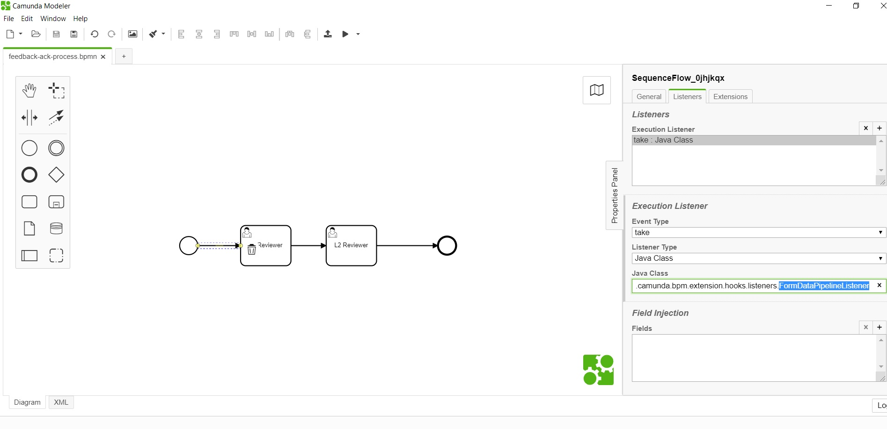

<article class="docs-article">
    <section class="docs-section" id="listeners">
        <div>
            <h2 id="form-bpm-data-pipeline-listener">Form BPM Data Pipeline Listener</h2>
            <p><strong>org.camunda.bpm.extension.hooks.listeners.FormBPMDataPipelineListener</strong>
            </p>
            <p>This component can be used on any event of task/execution listener. Upon
                configuration, it copies
                data from form (formio) to camunda variables.</p>
            <h3 id="table-of-content">Table of Content</h3>
            <ul>
                <li><a href="#type">Type</a></li>
                <li><a href="#how-it-works">How it Works</a></li>
                <li><a href="#how-to-use">How to Use</a></li>
            </ul>
            <h4 id="type">Type</h4>
            <p>Task/Execution Listener</p>
            <h4 id="how-it-works">How it Works</h4>
            <p>This component invokes the <strong>formio Rest based submission endpoint</strong> to
                read data; and
                create or update camunda variables.</p>
            <h4 id="how-to-use">How to Use</h4>
            <p>Below snapshot shows how to configure the <strong>FormDataPipelineListener</strong>
                to an
                execution. </p>
            <p>
                <br><br>
                Click here <a href="Form BPM Filtered Data Pipeline Listener.html">Form BPM Filtered
                    Data
                    Pipeline Listener</a>
            </p>

        </div>
        </section>
        </article>